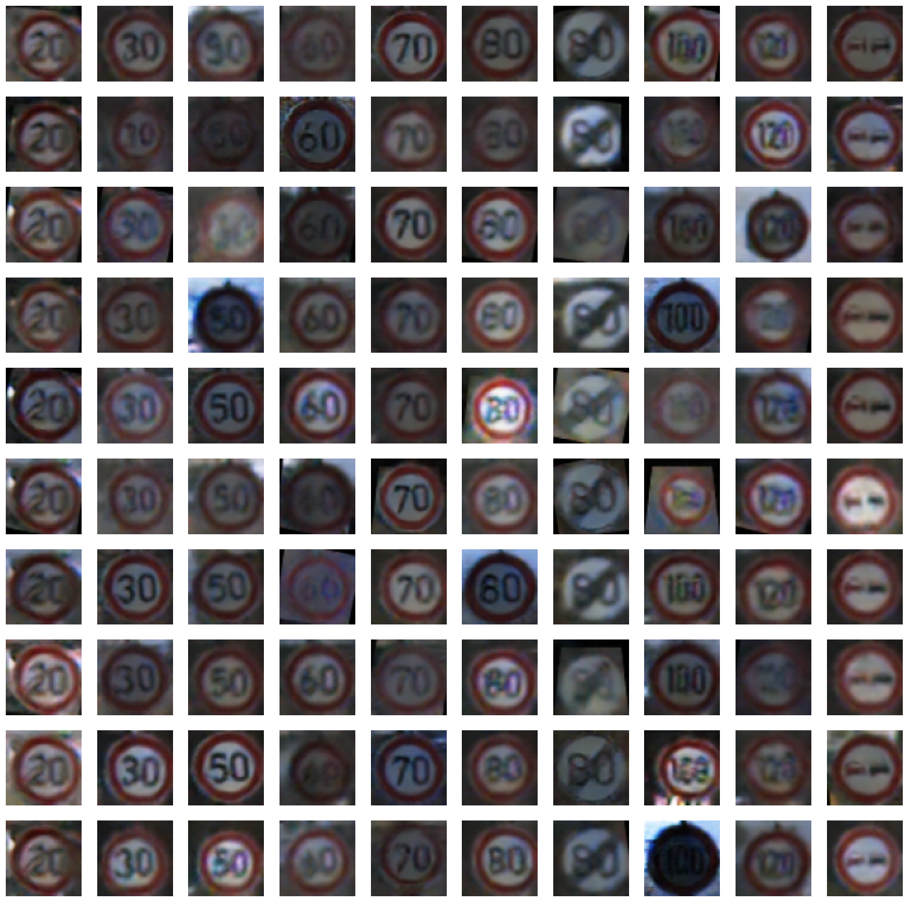
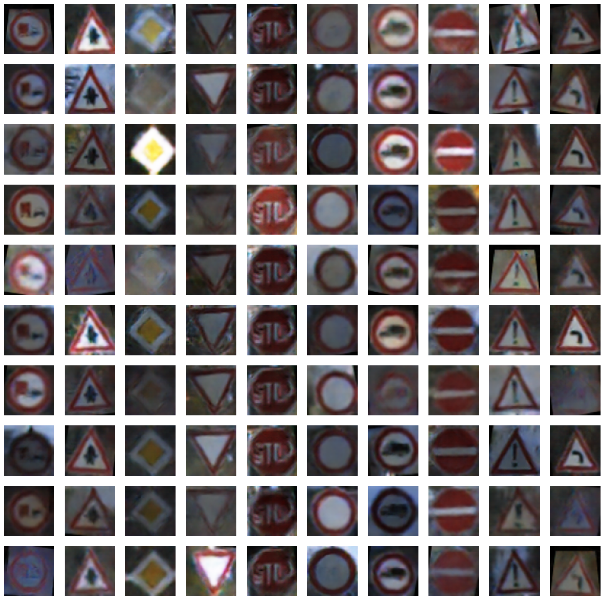
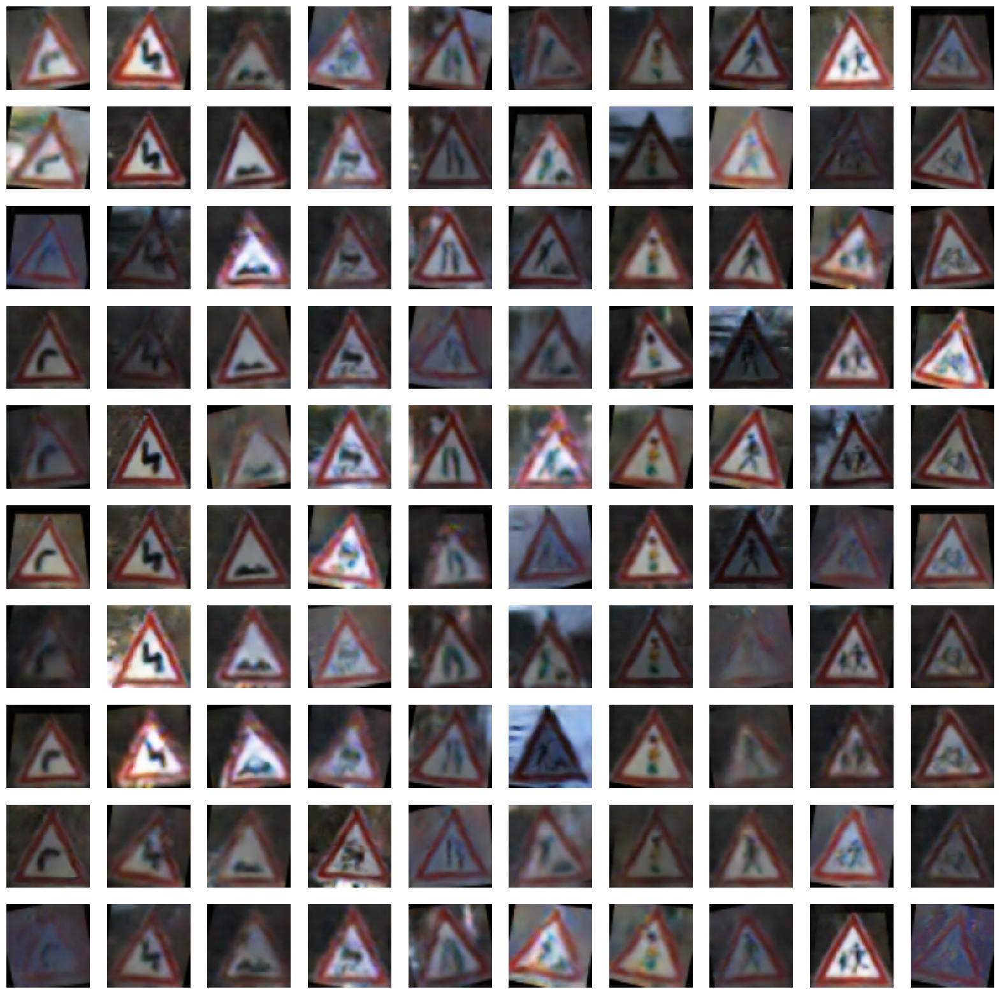
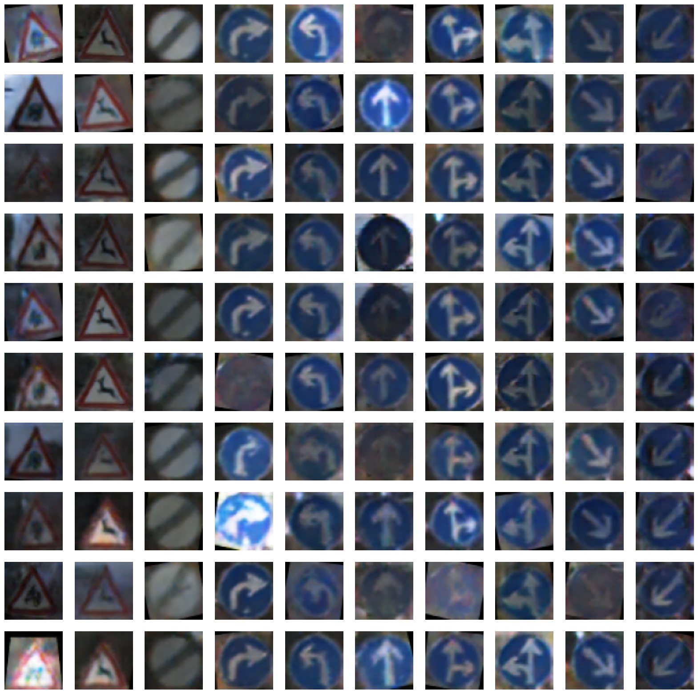
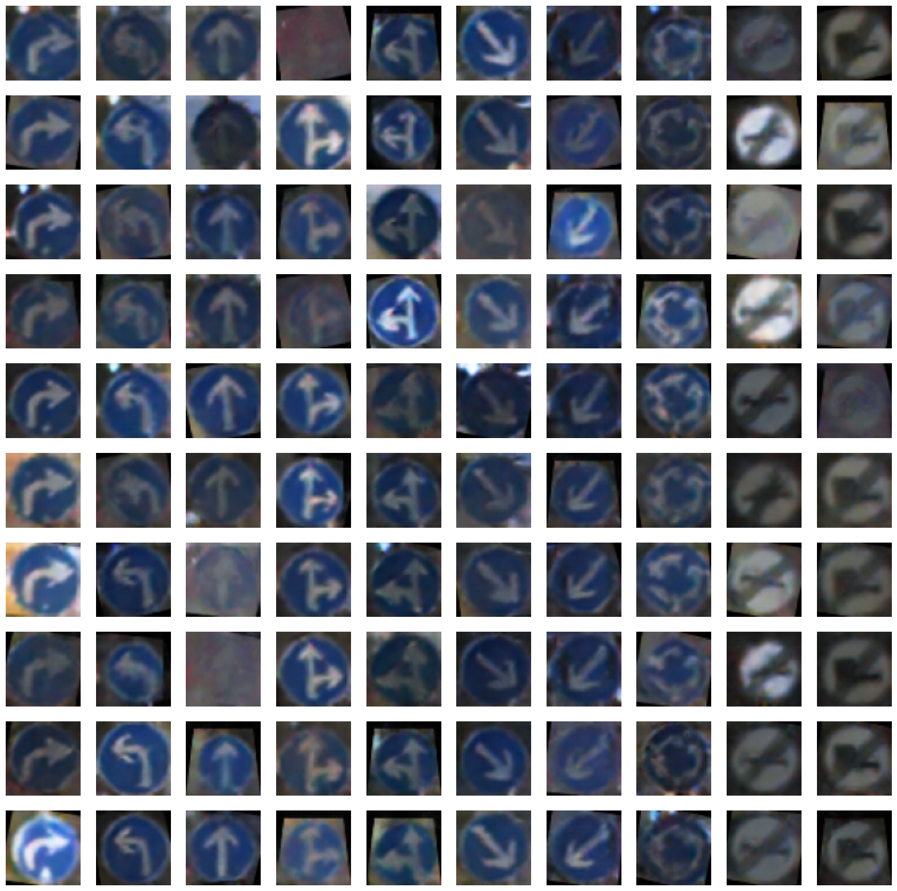

This project focuses on using Conditional Generative Adversarial Network (GAN) to train a model that can generate traffic signs using traffic sign image dataset from kaggle.
Data Preprocessing: any imgages that are too dim and dark are filtered out. the remaining images are then resized to 64x64
Following the architecture above, the machine learning framework Keras is used to implement the generator, the discriminator and the GAN itself.
results:
class 0 - 9
class 10 - 19
class 20 - 29
class 30 - 39
class 33 - 42
Improvements: a two stage structure which most text-to-image networks adopt can be used, where stage 1 is to form the composition of the image and stage 2 is to form the details, resulting in a better result.
Code can be found here in my github